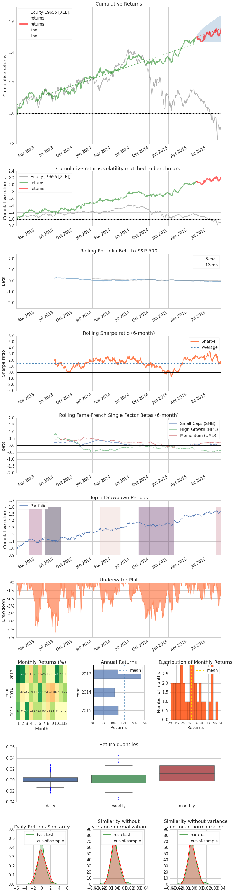
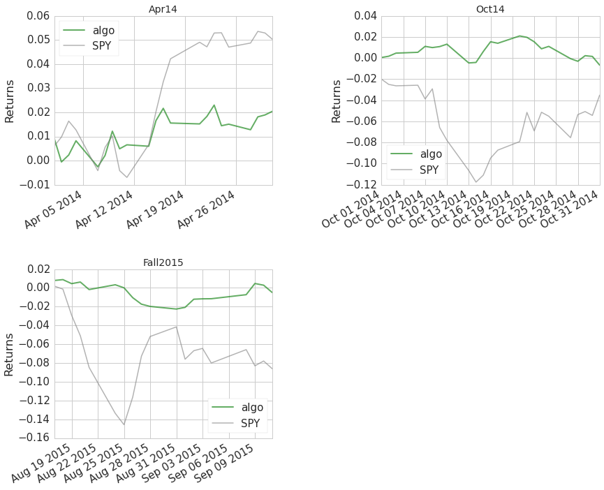
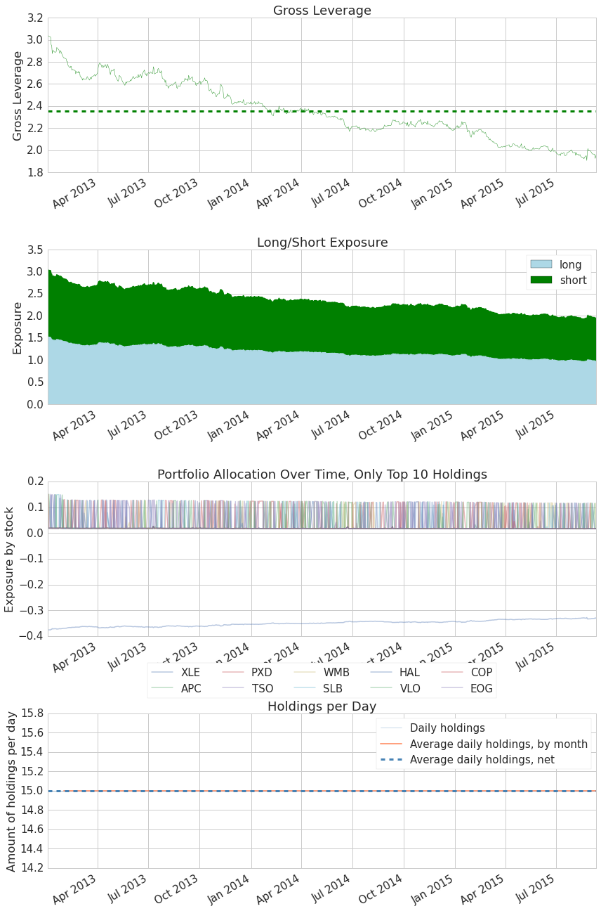
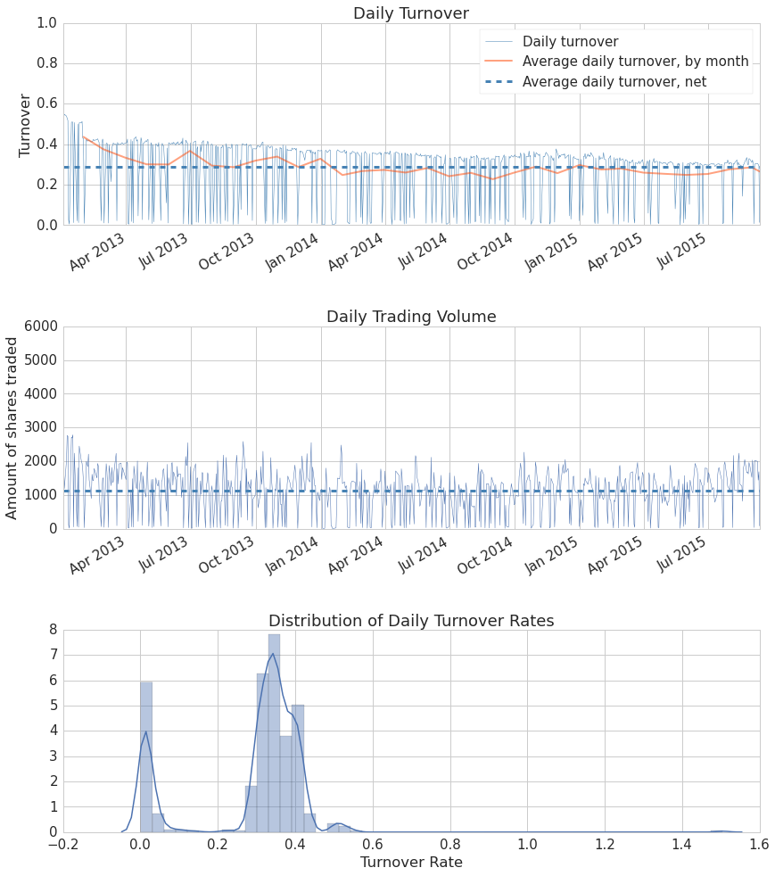

Full Tear Sheet Example
Note: Please run this notebook in Quantopian Research
backtest = get_backtest('55f8c9acea2cd40e0029c206')
100% Time: 0:00:10|###########################################################|
backtest.create_full_tear_sheet(live_start_date='2015-5-16')
Entire data start date: 2013-01-02
Entire data end date: 2015-09-11
Out-of-Sample Months: 3
Backtest Months: 28
Backtest Out_of_Sample All_History
annual_return 0.18 0.07 0.16
annual_volatility 0.10 0.08 0.10
sharpe_ratio 1.77 0.83 1.67
calmar_ratio 2.77 2.26 2.57
stability 0.94 0.60 0.96
max_drawdown -0.06 -0.03 -0.06
omega_ratio 1.36 1.14 1.33
sortino_ratio 2.85 1.28 2.68
skewness 0.34 0.17 0.34
kurtosis 1.88 -0.56 1.77
alpha 0.17 0.03 0.16
beta 0.09 -0.06 0.06
Worst Drawdown Periods
net drawdown in % peak date valley date recovery date duration
0 6.36 2013-05-20 2013-07-10 2013-08-02 55
2 5.76 2013-03-05 2013-04-15 2013-05-07 46
1 4.81 2014-08-11 2014-10-31 2015-01-28 123
4 3.72 2014-02-10 2014-02-20 2014-05-16 70
3 3.11 2015-08-18 2015-08-31 NaT NaN
2-sigma returns daily -0.012
2-sigma returns weekly -0.023
dtype: float64

Stress Events
mean min max
Apr14 0.001 -0.011 0.011
Oct14 -0.000 -0.018 0.010
Fall2015 -0.000 -0.011 0.012

Top 10 long positions of all time (and max%)
[u'APC' u'PXD' u'TSO' u'WMB' u'SLB' u'HAL' u'VLO' u'COP' u'EOG' u'PSX']
[ 0.151 0.15 0.15 0.15 0.149 0.149 0.149 0.13 0.129 0.128]
Top 10 short positions of all time (and max%)
[u'XLE']
[-0.376]
Top 10 positions of all time (and max%)
[u'XLE' u'APC' u'PXD' u'TSO' u'WMB' u'SLB' u'HAL' u'VLO' u'COP' u'EOG']
[ 0.376 0.151 0.15 0.15 0.15 0.149 0.149 0.149 0.13 0.129]
All positions ever held
[u'XLE' u'APC' u'PXD' u'TSO' u'WMB' u'SLB' u'HAL' u'VLO' u'COP' u'EOG'
u'PSX' u'KMI' u'OXY' u'CVX' u'XOM']
[ 0.376 0.151 0.15 0.15 0.15 0.149 0.149 0.149 0.13 0.129
0.128 0.128 0.127 0.126 0.126]

